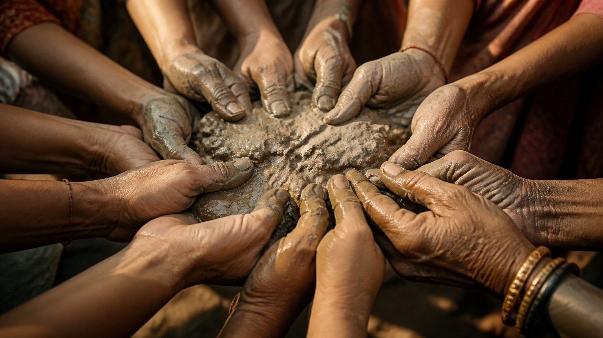
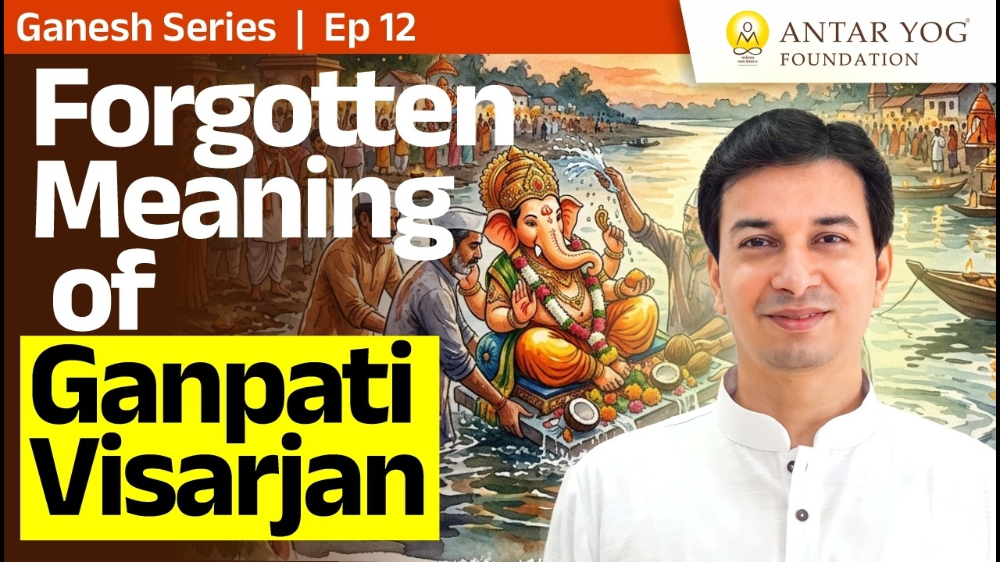

दस दिन, और फिर?
गणपति आए, दस दिन संगीत बजा, सजावट हुई, और दसवें दिन हमने कह दिया कि अब इस मूर्ति की कोई आवश्यकता नहीं है।
पर इन दस दिनों में हमारी बातचीत किस बारे में रही? तेरा गणपति बड़ा है, हमारा छोटा है, यह सजावट अच्छी है। यदि उत्सव का सार यही रह गया, तो इस सुंदर प्रतीक का लाभ क्या हुआ? आचार्य जी कहते हैं कि उत्सव क्या था और हम क्या कर रहे हैं, पहले इतना तो समझें।
विसर्जन: नाम-रूप को ज्ञान-गंगा में अर्पित करना
दसवें दिन हमने वही किया जो ऋषियों ने कहा था। पर उनका आशय क्या था? हर व्यक्ति अपना नाम-रूप (name and form, यानी साकार पहचान) विलीन कर दे।
इसे एक सरल उदाहरण से समझो। तुम्हारी नथ, अंगूठी, चेन, सब अलग-अलग दिखते हैं। पर गलाने पर सब एक ही स्वर्ण बन जाते हैं। वैसे ही मूर्ति का नाम-रूप बहते जल में, नदी में, समुद्र में अर्पित किया जाता है।
बहता जल गंगा का प्रतीक है, और गंगा का अर्थ है ज्ञान-गंगा। विसर्जन का अर्थ था उसी ज्ञान की गंगा में डुबकी लगाना।
नदी और समुद्र के तट पर हज़ारों मूर्तियाँ दिखती हैं, यानी हज़ारों नाम, रूप और शरीर, हर घर का अपना प्रतीक। सब उसी समुद्र में विलीन होते हैं। ठीक वैसे ही, एक दिन हम सब उसी ज्ञान, सुख, वैराग्य, सत्, पूर्ण सत्, गुणातीत (तीनों गुणों से परे) निराकार अवस्था में विलीन होंगे।
सबके हाथ एक जैसी मिट्टी
विसर्जन के बाद जल से निकली मिट्टी तुम्हारे आसन पर, पाट पर रखकर दी जाती है कि इसे घर ले जाओ।
अब ज़रा सोचो। मूर्ति काले वस्त्र वाली थी या लाल, गोरी थी या साँवली, ऊँची थी या छोटी, गुरु की मूर्ति थी या सादी, स्त्री रूप में थी या आधी पतलून वाली। जाते समय सबका रूप अलग था। पर लौटते समय? सबके हाथ बिल्कुल एक जैसा, बस एक मिट्टी का ढेर।
इसका गहरा अर्थ है। यह मिट्टी वह पदार्थ है जिससे सब बना है, और वह पदार्थ हम सबका एक ही है: परमात्मा। दसवें दिन वही परमात्मा घर लाना था। उस दिन से हर ओर अद्वैत (non-duality, यानी सबमें एक ही सत्ता का अनुभव) दिखना चाहिए था। आचार्य जी पूछते हैं कि क्या किसी को बाईस किलो मिट्टी मिलती है; सबसे बड़ी मूर्ति वाले को भी मुट्ठी भर ही मिलेगी।
बाईस फुट का गणपति हो या हथेली भर का, लौटती मिट्टी मुट्ठी भर ही होती है। कोई तराज़ू पर तौलकर नहीं कहता कि तेरी मूर्ति छोटी थी, तो तुझे एक चम्मच ही मिलेगी। हर किसी को बिल्कुल समान मिलता है। छोटे-बड़े का यही भेद विलीन होना था।
क्या तुम्हारे जीवन में भी कहीं "मेरा बड़ा, तेरा छोटा" का भाव उस एक सत्य को ढक रहा है जो सबमें समान है?

जब उत्सव प्रतियोगिता बन जाए
पहला पुरस्कार, दूसरा पुरस्कार, किसका संगीत अच्छा, किसकी सजावट भव्य। गुरुदेव साफ़ कहते हैं कि यह सब व्यर्थ था। अद्वैत को अपनाकर आगे बढ़ना था।
वह उद्देश्य कहीं दूर छूट गया, और काम की बात सीखी ही नहीं गई।
मिट्टी को कचरा मत समझो
परंपरा कहती थी कि यह मिट्टी पूरे घर में फैला दो। पहले घर मिट्टी के होते थे, तो इसे दीवारों के लेप में मिला दिया जाता था, ताकि घर-बार में यह सत्य सदा याद रहे।
और आज? मिट्टी घर आती है और प्रश्न उठता है, "माँ, इस कचरे का क्या करूँ?" जिसे "गणपति, गणपति" कहते हुए घर लाए, वही दो क्षण बाद स्नानघर की नाली में बहा दिया जाता है। आचार्य जी कहते हैं कि दो मिनट पहले वह गणपति था, और अब उसे कचरा समझकर फेंक दिया।
जो कुछ क्षण पहले पूज्य था, वह अचानक कचरा कैसे बन गया? बदला क्या, मिट्टी या हमारी दृष्टि?
भूल से बाहर आना हमारा कर्तव्य
शास्त्र कहता है कि भूल करने की स्वतंत्रता तुम्हें है, पर हृदय भीतर से जानता है कि वह भूल है। उससे पहले बाहर आना कि वह तुम्हें या दूसरों को हानि पहुँचाए, यह तुम्हारा कर्तव्य है।
इसीलिए अंतर में कुछ अलग सिखाया जाता है: बच्चों को बचपन से ही पूरा सिखाओ कि गणपति का अर्थ क्या है।
मुख्य बातें
- विसर्जन नाम-रूप को ज्ञान-गंगा में अर्पित करने का प्रतीक है।
- बहता जल गंगा है, और गंगा का अर्थ है ज्ञान-गंगा।
- लौटी हुई मिट्टी सबको समान मिलती है: वह एक ही परमात्मा का प्रतीक है।
- दसवें दिन से हर ओर अद्वैत दिखना चाहिए था।
- बड़े-छोटे गणपति, पुरस्कार और संगीत की होड़ उत्सव का उद्देश्य नहीं है।
- मिट्टी को घर में स्थान दो, उसे कचरा समझकर नाली में मत बहाओ।
- बच्चों को बचपन से सिखाओ कि गणपति का अर्थ क्या है।
